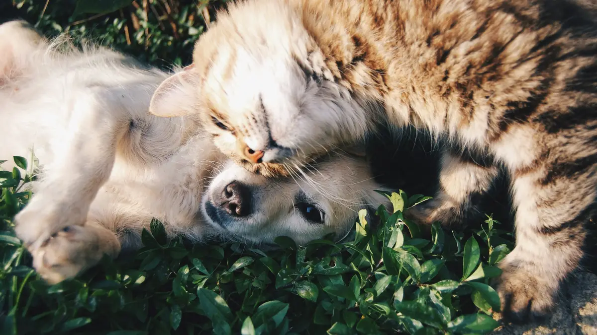

Pet Poison Calculator for Dogs and Cats
Enter your dog or cat's weight and what they ate. This free pet poison calculator estimates how urgently you should call a veterinarian. It is a first look, not a diagnosis.
Each calculator is labeled for the species it covers. The dog poison calculator pages include chocolate, grapes and raisins, xylitol, onions and garlic, macadamia nuts, marijuana, nicotine, rat poison, bromethalin, ibuprofen, naproxen, and aspirin. The cat toxicity calculator pages cover true lilies, acetaminophen (Tylenol), aspirin, nicotine, bromethalin, and grapes and raisins. Any amount of lilies or acetaminophen is an emergency for a cat, and the aspirin calculator treats any aspirin a cat eats as an emergency too. If your pet ate something that is not listed, call ASPCA Animal Poison Control at (888) 426-4435 or Pet Poison Helpline at (855) 764-7661 right away. Both lines answer 24 hours a day. A consultation fee may apply.

Every result is an urgency estimate based on published case data, not a diagnosis. For any suspected toxic ingestion, contact a veterinarian or an animal poison control center immediately, regardless of what a calculator shows.
Choose a calculator
Select what your pet ate to get a weight-adjusted risk assessment.
Lilies
Easter, tiger, Asiatic, Stargazer, daylilies. Any bite, pollen, or vase water is an emergency.
Open calculator →Acetaminophen (Tylenol)
Tylenol and cold/flu products. Any amount is an emergency for cats.
Open calculator →Grapes & Raisins
Covers fresh grapes, raisins, currants, and sultanas. No known safe dose.
Open calculator →Chocolate
Risk depends heavily on chocolate type: baking, dark, milk, or white.
Open calculator →Xylitol
Found in sugar-free gum, peanut butter, and baked goods. Fast-acting and severe.
Open calculator →Onions & Garlic
Damages red blood cells. Includes raw, cooked, and powdered forms.
Open calculator →Ibuprofen (Advil, Motrin)
Narrow margin of safety: can cause stomach ulcers and kidney injury.
Open calculator →Naproxen (Aleve)
Far more toxic to dogs than ibuprofen. One tablet can cause ulcers and kidney injury.
Open calculator →Aspirin
Bayer, Bufferin, baby aspirin. Cats are far more sensitive than dogs.
Open calculator →Nicotine (Cigarettes, Gum, Vapes)
Butts, cigars, gum, patches, and vape pods. Flags gum that may contain xylitol.
Open calculator →Bromethalin Rat Poison
Dose math for bromethalin bait by label strength. No antidote; cats are most sensitive.
Open calculator →Grapes & Raisins (Cats)
No established safe or toxic dose for cats, so any amount is treated as an emergency.
Open calculator →Marijuana & THC Edibles
Gummies, brownies, flower, and oils. Flags edibles with chocolate or xylitol.
Open calculator →Rat & Mouse Poison
Anticoagulants, bromethalin, vitamin D3, phosphides. Any ingestion is an emergency.
Open calculator →Macadamia Nuts
Causes weakness and vomiting. Flags chocolate-covered nuts and baked goods.
Open calculator →How the calculators work
Each page is a toxicity calculator for one substance. You enter a body weight and, for most substances, what was eaten and how much. The page converts that into a dose per kilogram and compares it with published ranges, using the more cautious end when sources disagree. You get an urgency level (caution, urgent, or emergency) and a next step. The page cannot examine your pet.
The pet poison calculator is only a triage aid. It does not replace a veterinarian, bloodwork, or a toxicologist who can ask follow-up questions. A few hazards are not given a "small amount is probably fine" result. Grapes and raisins have no established safe dose in dogs. True lilies and daylilies are an emergency for cats after pollen, vase water, or a bite of leaf or flower. Any rat or mouse poison is an emergency, and this site does not calculate a safe bait dose. Any amount of acetaminophen is an emergency for cats. Call a veterinarian or a poison control line even when an estimate looks mild.
What to do in the first few minutes
Move your pet away from the substance and pick up anything left so they cannot eat more. Do not offer a home remedy, and do not try to make them vomit. Keep the package or a photo of the label, and note the time. Then call, even if they look normal. If your pet collapses, has a seizure, or cannot be woken, go to an emergency clinic now.
Find a 24/7 emergency vet near me (opens Google Maps in a new tab; we never see your location). Save the number of your closest one now, before you need it.
Take a breath. You are doing the right thing.
A scare with a pet you love is stressful. Checking quickly and calling for advice is exactly what a caring owner does. Keep your pet close and calm, and call your veterinarian, ASPCA Animal Poison Control at (888) 426-4435, or Pet Poison Helpline at (855) 764-7661.
Photos: Florian Schindler on Unsplash, Jagjeet Dhuna on Unsplash, Alvan Nee on Unsplash, Erik-Jan Leusink on Unsplash, Wade Austin Ellis on Unsplash, David R Pariente on Unsplash.

Why we built this
We are pet owners too. When a dog or cat gets into something it should not, the first few minutes are scary and confusing, and most search results are slow, vague, or buried under ads. We wanted one place that gives a fast, clear answer to two questions: how worried should I be, and what should I do right now?
Every calculator is built from published veterinary toxicology sources, and each page lists the sources it uses. PetPoisonCalc is not a substitute for a veterinarian. If your pet may have eaten something toxic, call your vet or a poison control line right away: ASPCA Animal Poison Control at (888) 426-4435 or Pet Poison Helpline at (855) 764-7661. A consultation fee may apply.
Prevent it before it happens
Most pet poisonings involve everyday items left within reach. Our free, printable pet poison-proofing checklist walks you through the kitchen, medicine cabinet, garden and garage in a few minutes.
Frequently asked questions
These answers follow the same guidance as the calculator pages. PetPoisonCalc estimates relative urgency from published veterinary toxicology data and known case reports. A result is not a diagnosis and cannot rule out risk at any dose. Every suspected ingestion should be checked by a veterinarian or an animal poison control center, whatever an estimate shows.
How does a pet poison calculator work?
You choose the substance, enter a weight, and enter how much was eaten. For lilies and rat poison, you identify the plant or the active ingredient instead. Most pages turn that into a dose per kilogram, compare it with published thresholds, and return an urgency level plus who to call. Any true lily in a cat, and any rat poison, is an emergency at any amount. The math runs in your browser. If the amount or product is wrong, so is the estimate. Use it as a reason to call, not as an all-clear.
How accurate is it?
It is only as good as the published ranges behind it, and those ranges are not a promise about your pet. Where sources disagree, this site uses the lower, more cautious figure. The estimate cannot account for age, breed, pregnancy, other illnesses, other medicines, or a second toxin in the same product. A result labeled caution means call. It does not mean wait and see, and it cannot rule out risk.
Should I call ASPCA Animal Poison Control or Pet Poison Helpline?
Either line is appropriate. You do not need to call both. ASPCA Animal Poison Control is (888) 426-4435. Pet Poison Helpline is (855) 764-7661. Both answer 24 hours a day. A consultation fee may apply, so confirm the cost when you call. If your own vet or an emergency clinic is open, call them too. If the clinic is closed, call one hotline first and save the case number for the treating veterinarian.
Should I make my pet vomit?
No. Never make a dog or cat vomit unless a veterinarian or animal poison control tells you to, for this pet and this substance. Salt, oil, and hydrogen peroxide are not safe defaults. Do not make a cat vomit at home. THC can leave a dog too sedated to protect the airway, and phosphide rat baits can release a toxic gas if vomited. If a phosphide is possible, travel with the windows open. Call first.
What are the most common pet poisons?
Human medicines and foods make up a large share of animal poison calls. These pages cover chocolate, xylitol, grapes and raisins, onions and garlic, macadamia nuts, THC edibles, nicotine and vapes, ibuprofen, naproxen, aspirin, acetaminophen, rat poison including bromethalin, true lilies for cats, and grapes and raisins for cats. Cleaners, oils, and veterinary drugs cause poisonings too and are not all listed. If yours is missing, call (888) 426-4435 or (855) 764-7661. A consultation fee may apply.
What information should I have ready when I call a vet?
Have species, breed, age, sex, and whether your pet is pregnant. Give a weight, even an estimate. Name the product, the active ingredient, how much is missing, and when it happened. Mention other pets with access, symptoms, current medicines, and illnesses such as kidney or stomach disease. A photo of the package or plant helps. An approximate weight and a picture of the label are enough to start.
Is this only a tool for dogs?
No. Most calculators are for dogs because that is where the published dose data is. The lily page treats any true lily or daylily contact as an emergency for cats, including pollen and vase water. Peace lilies and calla lilies irritate the mouth. Lily of the valley affects the heart. Any acetaminophen in a cat is an emergency. If a cat ate something with only a dog page, do not reuse the dog dose. Call and say it was a cat.
What if the estimate says the dose is low?
Call anyway. A low result only means the amount you entered is under the cautious threshold used here. It is not a finding that the ingestion is safe. Grapes, true lilies, rodenticides, and acetaminophen in cats are emergencies even in small amounts. Onion, garlic, and naproxen problems can appear days later. If your pet collapses, seizes, or cannot be woken, go to an emergency clinic now.
Have a suggestion for another ingestion calculator we should build? We're actively expanding this toolset.